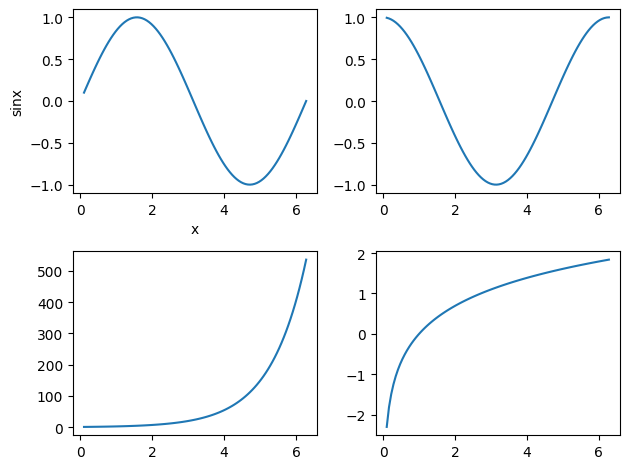

import pandas as pd
import numpy as np
import matplotlib.pyplot as plt
import seaborn as sns
import warnings
warnings.filterwarnings('ignore')
%config inlineBackend.figure_format = 'retina'1. Basic Operations
1
data = {
'Name': ['Virat', 'Dhoni', 'Rohit', 'Sachin', 'Gavaskar'],
'Math': [90, 80, 85, 70, 95],
'Science': [85, 88, 90, 75, 92],
'English': [78, 85, 82, 90, 88]
}
df = pd.DataFrame(data)
df['tot'] = df['Math'] + df['Science'] + df['English']
df.head()
df.describe()| Math | Science | English | tot | |
|---|---|---|---|---|
| count | 5.000000 | 5.000000 | 5.000000 | 5.000000 |
| mean | 84.000000 | 86.000000 | 84.600000 | 254.600000 |
| std | 9.617692 | 6.670832 | 4.774935 | 14.240786 |
| min | 70.000000 | 75.000000 | 78.000000 | 235.000000 |
| 25% | 80.000000 | 85.000000 | 82.000000 | 253.000000 |
| 50% | 85.000000 | 88.000000 | 85.000000 | 253.000000 |
| 75% | 90.000000 | 90.000000 | 88.000000 | 257.000000 |
| max | 95.000000 | 92.000000 | 90.000000 | 275.000000 |
2
#remember to load the csv everytime we run this 1.2
x = pd.read_csv('Book1.csv')
df = x.tail()
df
print(x.shape)
print(len(x.columns))(5, 4)
43
#1.3
data = { 'Name': ['Virat', 'Dhoni', 'Rohit', 'Sachin', 'Gavaskar'],
'Employee ID': ['1', '2', '3', '4', '5'], 'Dept': ['AI', 'ML', 'AI', 'AI', 'ML'],
'Salary': [50000, 51000, 52000, 53000, 54000]
}
df = pd.DataFrame(data)
df.eval('bonus = Salary * 0.1', inplace = True)
df.eval('Salary = Salary * 1.2', inplace = True)
print(df) #have printed both for comparision.
df.drop('Dept', axis = 1, inplace = True)
print(df) Name Employee ID Dept Salary bonus
0 Virat 1 AI 60000 5000.0
1 Dhoni 2 ML 61200 5100.0
2 Rohit 3 AI 62400 5200.0
3 Sachin 4 AI 63600 5300.0
4 Gavaskar 5 ML 64800 5400.0
Name Employee ID Salary bonus
0 Virat 1 60000 5000.0
1 Dhoni 2 61200 5100.0
2 Rohit 3 62400 5200.0
3 Sachin 4 63600 5300.0
4 Gavaskar 5 64800 5400.02. Indexing and Slicing
1
#2.1
import pandas as pd
import numpy as np
import matplotlib.pyplot as plt
import seaborn as sns
import warnings
warnings.filterwarnings('ignore')
%config inlineBackend.figure_format = 'retina'
data = {
'Employee': ['E1', 'E2', 'E3', 'E4', 'E5'],
'Department': ['HR', 'IT', 'Finance', 'IT', 'HR'],
'Salary': [50000, 60000, 55000, 58000, 52000],
'Performance_Rating': [8.2, 7.8, 8.5, 7.4, 8.0],
'Years_at_Company': [5, 3, 6, 2, 4]
}
res = pd.DataFrame(data)
res2 = ((res['Department'] == 'HR') | (res['Department'] == 'IT')) & (res['Performance_Rating'] >= 8) & ((res['Salary'] < 55000) | (res['Years_at_Company'] >= 4))
res2| 0 | |
|---|---|
| 0 | True |
| 1 | False |
| 2 | False |
| 3 | False |
| 4 | True |
2
#2.2
data = {
'Product': ['Laptop', 'Phone', 'Tablet', 'Monitor', 'Headphones'],
'Price': [800, 400, 300, 150, 50],
'Stock': [20, 35, 50, 10, 100],
'Rating': [4.5, 4.2, 3.8, 4.8, 4.0]
}
res = pd.DataFrame(data)
res2 = res.iloc[-3:]
res3 = res.iloc[-3:, 0:3]
res3| Product | Price | Stock | |
|---|---|---|---|
| 2 | Tablet | 300 | 50 |
| 3 | Monitor | 150 | 10 |
| 4 | Headphones | 50 | 100 |
3
#2.3
data = {
'Name': ['John', 'Sara', 'Tom', 'Alex', 'Julia'],
'Age': [29, 35, 40, 25, 31],
'Salary': [50000, 60000, 75000, 45000, 52000],
'Department': ['HR', 'Finance', 'IT', 'HR', 'IT']
}
res = pd.DataFrame(data)
res2 = res.set_index('Name', inplace = False)
res3 = res2.loc['Tom']
print(res3)
res4 = res2.iloc[0:2, 1:3]
print(res4)Age 40
Salary 75000
Department IT
Name: Tom, dtype: object
Salary Department
Name
John 50000 HR
Sara 60000 Finance3. GroupBy and Aggregations
1
#3.1
data = pd.DataFrame({
"StudentID": [1, 2, 3, 2, 3, 1],
"Subject": ["Math", "Science", "Math", "Math","Science", "Science"],
"Score": [85, 90, 78, 88, 92, 95]
})
res = data.groupby('StudentID')['Score'].mean()
res| Score | |
|---|---|
| StudentID | |
| 1 | 90.0 |
| 2 | 89.0 |
| 3 | 85.0 |
2
#3.2
data = {
'Region' : ['1', '1', '2', '2', '3', '3', '4'],
'ID' : [11, 11, 13, 14, 14, 14, 15],
'Product' : ['toys', 'games', 'vessels', 'toys', 'Clothes', 'Clothes', 'Food'],
'Sales' : [100, 200, 150, 100, 400, 50, 1000]
}
df = pd.DataFrame(data)
res = df.groupby('Region')['Sales'].sum()
print(res)
res2 = df.groupby('ID')['Sales'].mean()
print(res2)Region
1 300
2 250
3 450
4 1000
Name: Sales, dtype: int64
ID
11 150.000000
13 150.000000
14 183.333333
15 1000.000000
Name: Sales, dtype: float643
#3.3
#by both method df.eval and df column multiplication
df = pd.DataFrame({
'Category': ['Electronics', 'Electronics', 'Clothing', 'Clothing', 'Groceries', 'Groceries'],
'Order_ID': ['O1', 'O2', 'O3', 'O4', 'O5', 'O6'],
'Price': [1000, 500, 100, 200, 50, 60],
'Discount': [50, 25, 10, 20, 5, 6],
'Quantity': [1, 2, 3, 1, 4, 5]
})
df.eval('tot_price = Price * Quantity', inplace=True)
print(df)
res2 = df.groupby('Category')['tot_price'].sum()
print(res2)
df['disc'] = df['Discount'] * df['Quantity']
res3 = df.groupby('Category')['disc'].sum()
print(res3)
print(df['disc'])
res4 = df['disc'].mean()
print(res4)
Category Order_ID Price Discount Quantity tot_price
0 Electronics O1 1000 50 1 1000
1 Electronics O2 500 25 2 1000
2 Clothing O3 100 10 3 300
3 Clothing O4 200 20 1 200
4 Groceries O5 50 5 4 200
5 Groceries O6 60 6 5 300
Category
Clothing 500
Electronics 2000
Groceries 500
Name: tot_price, dtype: int64
Category
Clothing 50
Electronics 100
Groceries 50
Name: disc, dtype: int64
0 50
1 50
2 30
3 20
4 20
5 30
Name: disc, dtype: int64
33.333333333333336res1 = df['tot_price']
df.iloc[res1.idxmax(), 1]
res2 = df['Discount']
df.iloc[res2.idxmax(), 1]'O1'4. Handling Missing Data
#4
# Load the Titanic dataset
df = sns.load_dataset('titanic')
# Select only numeric columns
numeric_df = df.select_dtypes(include=['float64', 'int64'])
# Introducing missing values in the 'pclass' column
np.random.seed(42)
pclass_nan_indices = np.random.choice(numeric_df.index, size=int(0.05 * len(numeric_df)), replace=False)
numeric_df.loc[pclass_nan_indices, 'pclass'] = np.nan
# Introducing missing values in the 'parch' column
parch_nan_indices = np.random.choice(numeric_df.index, size=int(0.70 * len(numeric_df)), replace=False)
numeric_df.loc[parch_nan_indices, 'parch'] = np.nan#4.1
numeric_df_copy=numeric_df.copy()
numeric_df.head()| survived | pclass | age | sibsp | parch | fare | |
|---|---|---|---|---|---|---|
| 0 | 0 | 3.0 | 22.0 | 1 | 0.0 | 7.2500 |
| 1 | 1 | 1.0 | 38.0 | 1 | NaN | 71.2833 |
| 2 | 1 | 3.0 | 26.0 | 0 | NaN | 7.9250 |
| 3 | 1 | 1.0 | 35.0 | 1 | 0.0 | 53.1000 |
| 4 | 0 | 3.0 | 35.0 | 0 | 0.0 | 8.0500 |
sns.heatmap(numeric_df)missingvalues_count=numeric_df.isnull().sum()
print(missingvalues_count)survived 0
pclass 44
age 177
sibsp 0
parch 623
fare 0
dtype: int64miss_percent=numeric_df.isnull().mean()*100
df_dropped=numeric_df.loc[:,miss_percent<=60]
display(df_dropped)| survived | pclass | age | sibsp | fare | |
|---|---|---|---|---|---|
| 0 | 0 | 3.0 | 22.0 | 1 | 7.2500 |
| 1 | 1 | 1.0 | 38.0 | 1 | 71.2833 |
| 2 | 1 | 3.0 | 26.0 | 0 | 7.9250 |
| 3 | 1 | 1.0 | 35.0 | 1 | 53.1000 |
| 4 | 0 | 3.0 | 35.0 | 0 | 8.0500 |
| ... | ... | ... | ... | ... | ... |
| 886 | 0 | NaN | 27.0 | 0 | 13.0000 |
| 887 | 1 | 1.0 | 19.0 | 0 | 30.0000 |
| 888 | 0 | 3.0 | NaN | 1 | 23.4500 |
| 889 | 1 | 1.0 | 26.0 | 0 | 30.0000 |
| 890 | 0 | 3.0 | 32.0 | 0 | 7.7500 |
891 rows × 5 columns
#4.2
mode=numeric_df['pclass'].mode()
numeric_df['pclass'].fillna(mode, inplace=True)
display(numeric_df)
#mode imputation was appropriate for his column because it will capture the most common category. We can't use mean imputation because we need answer out of 1,2,3
#I would use mean imputation for age because we want average age of all the passengers for filling NA values.
mean=numeric_df['age'].mean()
numeric_df['age'].fillna(mean, inplace=True)
display(numeric_df)
sns.heatmap(numeric_df) #to check if NA values have vanished| survived | pclass | age | sibsp | parch | fare | |
|---|---|---|---|---|---|---|
| 0 | 0 | 3.0 | 22.0 | 1 | 0.0 | 7.2500 |
| 1 | 1 | 1.0 | 38.0 | 1 | NaN | 71.2833 |
| 2 | 1 | 3.0 | 26.0 | 0 | NaN | 7.9250 |
| 3 | 1 | 1.0 | 35.0 | 1 | 0.0 | 53.1000 |
| 4 | 0 | 3.0 | 35.0 | 0 | 0.0 | 8.0500 |
| ... | ... | ... | ... | ... | ... | ... |
| 886 | 0 | NaN | 27.0 | 0 | 0.0 | 13.0000 |
| 887 | 1 | 1.0 | 19.0 | 0 | NaN | 30.0000 |
| 888 | 0 | 3.0 | NaN | 1 | NaN | 23.4500 |
| 889 | 1 | 1.0 | 26.0 | 0 | NaN | 30.0000 |
| 890 | 0 | 3.0 | 32.0 | 0 | 0.0 | 7.7500 |
891 rows × 6 columns
| survived | pclass | age | sibsp | parch | fare | |
|---|---|---|---|---|---|---|
| 0 | 0 | 3.0 | 22.000000 | 1 | 0.0 | 7.2500 |
| 1 | 1 | 1.0 | 38.000000 | 1 | NaN | 71.2833 |
| 2 | 1 | 3.0 | 26.000000 | 0 | NaN | 7.9250 |
| 3 | 1 | 1.0 | 35.000000 | 1 | 0.0 | 53.1000 |
| 4 | 0 | 3.0 | 35.000000 | 0 | 0.0 | 8.0500 |
| ... | ... | ... | ... | ... | ... | ... |
| 886 | 0 | NaN | 27.000000 | 0 | 0.0 | 13.0000 |
| 887 | 1 | 1.0 | 19.000000 | 0 | NaN | 30.0000 |
| 888 | 0 | 3.0 | 29.699118 | 1 | NaN | 23.4500 |
| 889 | 1 | 1.0 | 26.000000 | 0 | NaN | 30.0000 |
| 890 | 0 | 3.0 | 32.000000 | 0 | 0.0 | 7.7500 |
891 rows × 6 columns
#4.3
print(numeric_df_copy)
print(numeric_df)
print(numeric_df_copy.isnull().sum())
print('\n')
print(numeric_df.isnull().mean()) survived pclass age sibsp parch fare
0 0 3.0 22.0 1 0.0 7.2500
1 1 1.0 38.0 1 NaN 71.2833
2 1 3.0 26.0 0 NaN 7.9250
3 1 1.0 35.0 1 0.0 53.1000
4 0 3.0 35.0 0 0.0 8.0500
.. ... ... ... ... ... ...
886 0 NaN 27.0 0 0.0 13.0000
887 1 1.0 19.0 0 NaN 30.0000
888 0 3.0 NaN 1 NaN 23.4500
889 1 1.0 26.0 0 NaN 30.0000
890 0 3.0 32.0 0 0.0 7.7500
[891 rows x 6 columns]
survived pclass age sibsp parch fare
0 0 3.0 22.000000 1 0.0 7.2500
1 1 1.0 38.000000 1 NaN 71.2833
2 1 3.0 26.000000 0 NaN 7.9250
3 1 1.0 35.000000 1 0.0 53.1000
4 0 3.0 35.000000 0 0.0 8.0500
.. ... ... ... ... ... ...
886 0 NaN 27.000000 0 0.0 13.0000
887 1 1.0 19.000000 0 NaN 30.0000
888 0 3.0 29.699118 1 NaN 23.4500
889 1 1.0 26.000000 0 NaN 30.0000
890 0 3.0 32.000000 0 0.0 7.7500
[891 rows x 6 columns]
survived 0
pclass 44
age 177
sibsp 0
parch 623
fare 0
dtype: int64
survived 0.000000
pclass 0.049383
age 0.000000
sibsp 0.000000
parch 0.699214
fare 0.000000
dtype: float645. Pandas: Merging Joining and Concatenation
1
#5.1
data1 = {
'student_id': [1, 2, 3, 4],
'name': ['Alice', 'Bob', 'Charlie', 'David']
}
data2 = {
'student_id': [2, 3, 4, 5],
'grade': ['A', 'B', 'C', 'D']
}
df1 = pd.DataFrame(data1)
df2 = pd.DataFrame(data2)
res = pd.merge(df1, df2, on='student_id', how='inner')
res| student_id | name | grade | |
|---|---|---|---|
| 0 | 2 | Bob | A |
| 1 | 3 | Charlie | B |
| 2 | 4 | David | C |
2
#5.2
employees_data = {
'employee_id': [1, 2, 3, 4],
'employee_name': ['Alice', 'Bob', 'Charlie', 'David']
}
departments_data = {
'employee_id': [2, 3, 4, 1],
'department_name': ['A', 'B', 'C', 'D']
}
employees = pd.DataFrame(employees_data)
departments = pd.DataFrame(departments_data)
res = pd.merge(employees, departments, how='outer')
res| employee_id | employee_name | department_name | |
|---|---|---|---|
| 0 | 1 | Alice | D |
| 1 | 2 | Bob | A |
| 2 | 3 | Charlie | B |
| 3 | 4 | David | C |
3
#5.3
df1 = {
'student_id': [1, 2, 3, 4],
'name': ['Alice', 'Bob', 'Charlie', 'David']
}
df2 = {
'student_id': [5, 6, 7, 8],
'name': ['Anish', 'Divakar', 'Vaibhav', 'Tanvi']
}
df_a = pd.DataFrame(df1)
df_b = pd.DataFrame(df2)
res = pd.concat([df_a, df_b], ignore_index=True)
res| student_id | name | |
|---|---|---|
| 0 | 1 | Alice |
| 1 | 2 | Bob |
| 2 | 3 | Charlie |
| 3 | 4 | David |
| 0 | 5 | Anish |
| 1 | 6 | Divakar |
| 2 | 7 | Vaibhav |
| 3 | 8 | Tanvi |
6. Pandas: Advanced Operations (Evaluation and Query)
1 and 2
#6.1 AND 6.2
from sklearn.datasets import load_iris
iris = load_iris()
df = pd.DataFrame(iris.data, columns=iris.feature_names)
print(df.head())
df.describe() sepal length (cm) sepal width (cm) petal length (cm) petal width (cm)
0 5.1 3.5 1.4 0.2
1 4.9 3.0 1.4 0.2
2 4.7 3.2 1.3 0.2
3 4.6 3.1 1.5 0.2
4 5.0 3.6 1.4 0.2| sepal length (cm) | sepal width (cm) | petal length (cm) | petal width (cm) | |
|---|---|---|---|---|
| count | 150.000000 | 150.000000 | 150.000000 | 150.000000 |
| mean | 5.843333 | 3.057333 | 3.758000 | 1.199333 |
| std | 0.828066 | 0.435866 | 1.765298 | 0.762238 |
| min | 4.300000 | 2.000000 | 1.000000 | 0.100000 |
| 25% | 5.100000 | 2.800000 | 1.600000 | 0.300000 |
| 50% | 5.800000 | 3.000000 | 4.350000 | 1.300000 |
| 75% | 6.400000 | 3.300000 | 5.100000 | 1.800000 |
| max | 7.900000 | 4.400000 | 6.900000 | 2.500000 |
3
#6.3
from sklearn.datasets import load_iris
iris = load_iris()
df = pd.DataFrame(iris.data, columns=iris.feature_names)
df['species'] = iris.target
res = df.query('`sepal length (cm)` > 6.5 and `petal length (cm)` > 5')
res2 = df.query('species == 2 and `petal width (cm)` < 2')
print(res)
print(res2) sepal length (cm) sepal width (cm) petal length (cm) petal width (cm) \
102 7.1 3.0 5.9 2.1
105 7.6 3.0 6.6 2.1
107 7.3 2.9 6.3 1.8
108 6.7 2.5 5.8 1.8
109 7.2 3.6 6.1 2.5
112 6.8 3.0 5.5 2.1
117 7.7 3.8 6.7 2.2
118 7.7 2.6 6.9 2.3
120 6.9 3.2 5.7 2.3
122 7.7 2.8 6.7 2.0
124 6.7 3.3 5.7 2.1
125 7.2 3.2 6.0 1.8
129 7.2 3.0 5.8 1.6
130 7.4 2.8 6.1 1.9
131 7.9 3.8 6.4 2.0
135 7.7 3.0 6.1 2.3
139 6.9 3.1 5.4 2.1
140 6.7 3.1 5.6 2.4
141 6.9 3.1 5.1 2.3
143 6.8 3.2 5.9 2.3
144 6.7 3.3 5.7 2.5
145 6.7 3.0 5.2 2.3
species
102 2
105 2
107 2
108 2
109 2
112 2
117 2
118 2
120 2
122 2
124 2
125 2
129 2
130 2
131 2
135 2
139 2
140 2
141 2
143 2
144 2
145 2
sepal length (cm) sepal width (cm) petal length (cm) petal width (cm) \
101 5.8 2.7 5.1 1.9
103 6.3 2.9 5.6 1.8
106 4.9 2.5 4.5 1.7
107 7.3 2.9 6.3 1.8
108 6.7 2.5 5.8 1.8
111 6.4 2.7 5.3 1.9
116 6.5 3.0 5.5 1.8
119 6.0 2.2 5.0 1.5
123 6.3 2.7 4.9 1.8
125 7.2 3.2 6.0 1.8
126 6.2 2.8 4.8 1.8
127 6.1 3.0 4.9 1.8
129 7.2 3.0 5.8 1.6
130 7.4 2.8 6.1 1.9
133 6.3 2.8 5.1 1.5
134 6.1 2.6 5.6 1.4
137 6.4 3.1 5.5 1.8
138 6.0 3.0 4.8 1.8
142 5.8 2.7 5.1 1.9
146 6.3 2.5 5.0 1.9
149 5.9 3.0 5.1 1.8
species
101 2
103 2
106 2
107 2
108 2
111 2
116 2
119 2
123 2
125 2
126 2
127 2
129 2
130 2
133 2
134 2
137 2
138 2
142 2
146 2
149 2 4
#6.4
df.eval('area = petal_length_cm * petal_width_cm', inplace=True)
df['area'].sort_values()
df['area'].head()
res = df.query('area > 10 and sepal_length_cm > 5 and sepal_length_cm < 7')
res| area | |
|---|---|
| 0 | 0.28 |
| 1 | 0.28 |
| 2 | 0.26 |
| 3 | 0.30 |
| 4 | 0.28 |
| ... | ... |
| 145 | 11.96 |
| 146 | 9.50 |
| 147 | 10.40 |
| 148 | 12.42 |
| 149 | 9.18 |
150 rows × 1 columns
5
#6.5
import matplotlib.pyplot as plt
avg = df['petal width (cm)'].mean()
print(avg)
cnt = df['species'].count()
print(cnt)
plt.scatter(df['sepal length (cm)'], df['petal length (cm)'])
plt.xlabel('sepal length (cm)', color='red')
plt.ylabel('petal length (cm)',color='blue')
plt.show()1.1993333333333336
1507. Matplotlib: Basic Plotting Questions
1
#7.1
x = np.linspace(0, 2 * np.pi, 100)
y = np.sin(x)
plt.plot(x, y)
plt.xlabel('x')
plt.ylabel('sin(x)')
plt.grid()
plt.show()2
#7.2
x = np.linspace(0, 2 * np.pi, 100)
y1 = np.sin(x)
y2 = np.cos(x)
plt.plot(x, y1, label='sin(x)', color='crimson')
plt.plot(x, y2, label='cos(x)', color='blue')
plt.xlabel('x')
plt.ylabel('sin(x), cos(x)')
plt.legend()
plt.grid()
plt.show()
3
#7.3
x = np.linspace(-10, 10, 100)
y = x * x
plt.plot(x, y, color='crimson', linewidth=6)
plt.xlabel('x')
plt.ylabel('x^2', color='crimson')
plt.title('quadrature')
plt.grid()8a. Bar Plot
1
#8.1
tips = sns.load_dataset('tips')
res = tips.groupby('day')['tip'].mean()
res.plot(kind = 'bar', x = 'day', y ='tip')
8b. Scatter Plot
1
#8.2
tips = sns.load_dataset('tips')
x = tips['total_bill']
y = tips['tip']
plt.scatter(x, y, color='crimson')
plt.xlabel('total_bill')
plt.ylabel('tip')
plt.title('Total Bill v/s Tips', color='blue')
plt.show()
#the relationship suggests that the amount of tip is proportional to the total_bill suggesting that customers who dine more have more tendency to give tips.9. Matplotlib: Subplots and Layouts
1
#9.1
x = np.linspace(0.1, 2 * np.pi ,100)
res1 = np.sin(x)
res2 = np.cos(x)
res3 = np.exp(x)
res4 = np.log(x);
fig, ax = plt.subplots(2, 2)
ax[0, 0].plot(x, res1)
ax[0, 0].set_xlabel("x")
ax[0, 0].set_ylabel("sinx")
ax[0, 1].plot(x, res2)
ax[1, 0].plot(x, res3)
ax[1, 1].plot(x, res4)
plt.tight_layout()
plt.show()
2
arr = np.random.rand(100)
fig,axes = plt.subplots(2,1,sharex=True)
axes[0].scatter(np.linspace(0.0,1.0,100),arr)
axes[1].hist(arr)
plt.show()10. Matplotlib: Advanced Customization
1
#10.1
x = np.linspace(-10, 10, 100)
y = x * x
plt.plot(x, y)
plt.xticks(np.arange(-10, 11, 2), rotation = 45)
plt.yticks(np.arange(0, 101, 5))
plt.show()2
#10.2
data = np.linspace(0,2*np.pi,num=100)
data_tan = np.linspace(-np.pi/2.1,np.pi/2.1,num=100)
fig,axes = plt.subplots(2,2)
plt.figure(figsize=(20,20))
l1=axes[0,0].plot(data,np.sin(data),color='orange',label='Sin(x)')
l2=axes[0,1].plot(data,np.cos(data),color='r',label='Cos(x)')
l3=axes[1,1].plot(data,np.tan(data_tan),color='k',label='Tan(x)')
l4=axes[1,0].plot(data,(np.sin(data)**2+np.cos(data)**2),color='b',label='Sin^2(x)+Cos^2(x)')
fig.legend(loc='upper left')
for i in range(2):
for j in range(2):
axes[i,j].grid(alpha=0.7)
plt.tight_layout()
plt.show()<Figure size 2000x2000 with 0 Axes>3.
4.
x = np.arange(1,11)
y = np.random.randint(0,10,10)
x_pos,y_pos = np.argmax(y),np.max(y)
plt.scatter(x,y,80,marker='*',color='r')
plt.annotate(f"({x_pos+1},{y_pos})",xy=(x_pos+1,y_pos),horizontalalignment='center',verticalalignment='bottom')
plt.show()5.
matrix = pd.DataFrame(np.round(np.random.random((5,5)),2))
sns.heatmap(matrix,cmap='coolwarm',vmin=0,vmax=1,annot=True)6.
x = np.linspace(-10, 10, 100)
y = np.linspace(-10, 10, 100)
X, Y = np.meshgrid(x,y)
pd.DataFrame(X)
Z = np.sin(np.sqrt(X**2 + Y**2))
fig, ax = plt.subplots(subplot_kw={"projection": "3d"})
surface = ax.plot_surface(X, Y, Z, cmap='coolwarm')
ax.set_title('3D Plot of sin(sqrt(x^2+y^2))', fontsize=15)
ax.set_xlabel('X-axis', fontsize=10)
ax.set_ylabel('Y-axis', fontsize=10)
ax.set_zlabel('Z-axis', fontsize=10)
fig.colorbar(surface,pad=0.1)
plt.show()